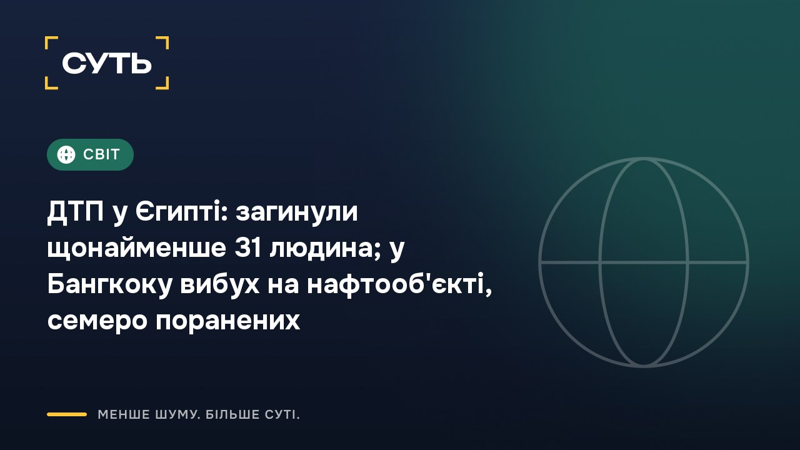

ДТП у Єгипті: загинули щонайменше 31 людина; у Бангкоку вибух на нафтооб'єкті, семеро поранених

- У Єгипті в провінції Гіза вантажівка з нафтопродуктами перекинулася і загорілася, полум'я охопило 27 авто. Загинули щонайменше 31 людина. — Суспільне
- На великому нафтовому об'єкті в Бангкоку стався вибух, семеро людей поранені. Жителів навколишнього району евакуюють. — Укрінформ
- Генпрокуратура Литви затримала п'ятьох громадян за підозрою в діяльності проти держави. Вони працювали на російські державні медіа за гроші. — Укрінформ
- Дружина японського журналіста, затриманого в Росії, благає про його звільнення. — Reuters
- Болгарія перехопила перший за кілька місяців човен із нелегальними мігрантами. — Reuters
- У Польщі врятували чоловіка, який напередодні підпалив себе біля Президентського палацу у Варшаві. — Європейська правда
- Міноборони Британії попередило резервістів, що вони мають бути готові до мобілізації на війну. — Європейська правда
Ця новина — з Telegram-каналу «Суть.»
Коротко, з першоджерел, без шуму.